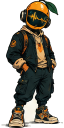

A SHARED EXPERIMENT IN SOUND
Pass the
frequency.
Your vibe. Your people.
Pick a feeling. Make it yours. Pass it on.
Afro house. Afrobeats. A little voltage.
From your room to the dance floor. Everyone’s welcome.
01 / TUNE YOUR SIGNAL1 OF 3
02 / ONE PROMPT. YOUR INTERPRETATION.TRANSMISSION 001
THE FIRST DJ CHALLENGESmall gathering.
Small gathering.
Big party energy.
A small get-together turning into a proper party.
Start soulful, build the percussion,
finish with energy.
The opening prompt is curated by Mango Static.
Future challenges can take their cue from you.

M-01ALWAYS LISTENING.
SOULPERCUSSIONRELEASE
THE NEXT TRANSMISSION
No featured interpretations yet. This is where it starts.
Selected by Mango Static. Always credited.Good music travels.
Share it with your people.